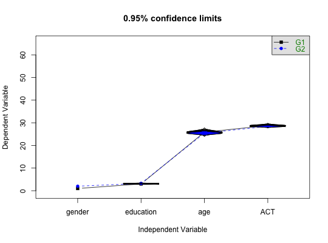
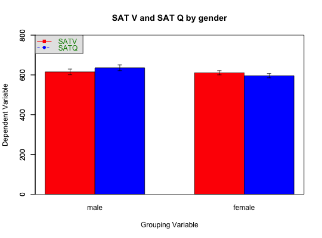
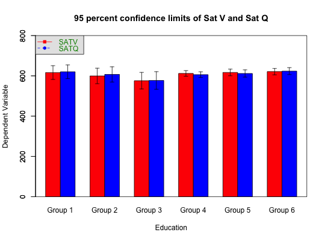
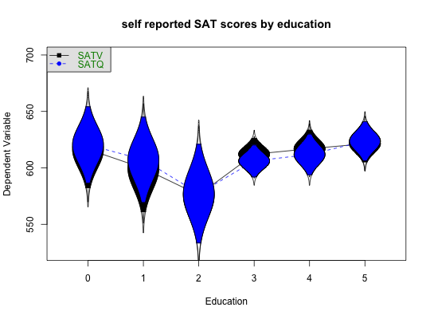
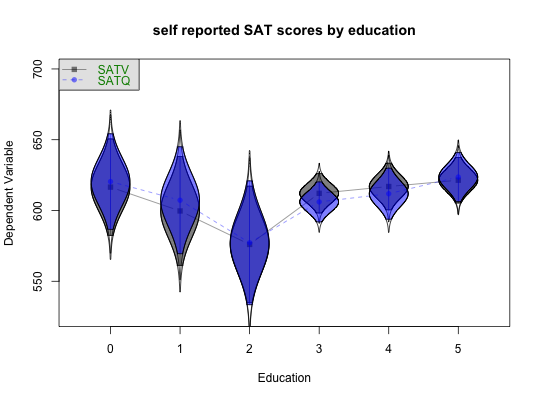
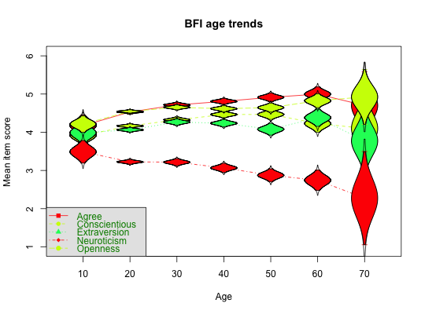
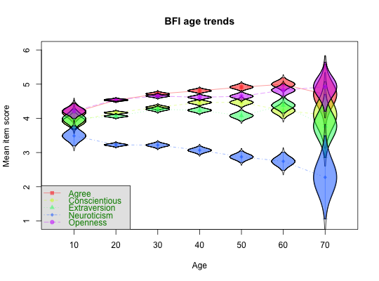

One of the many functions in R to plot means and confidence intervals. Meant mainly for demonstration purposes for showing the probabilty of replication from multiple samples. Can also be combined with such functions as boxplot to summarize distributions. Means and standard errors for each group are calculated using describe.by.
error.bars.by(x,group,by.var=FALSE,x.cat=TRUE,ylab =NULL,xlab=NULL,main=NULL,ylim= NULL, xlim=NULL, eyes=TRUE,alpha=.05,sd=FALSE,labels=NULL, v.labels=NULL, pos=NULL, arrow.len=.05,add=FALSE,bars=FALSE,within=FALSE,colors=c("black","blue","red"), lty,lines=TRUE, legend=0,pch,density=-10,...)
| x | A data frame or matrix |
|---|---|
| group | A grouping variable |
| by.var | A different line for each group (default) or each variable |
| x.cat | Is the grouping variable categorical (TRUE) or continuous (FALSE |
| ylab | y label |
| xlab | x label |
| main | title for figure |
| ylim | if specified, the y limits for the plot, otherwise based upon the data |
| xlim | if specified, the x limits for the plot, otherwise based upon the data |
| eyes | Should 'cats eyes' be drawn' |
| alpha | alpha level of confidence interval. Default is 1- alpha =95% confidence interval |
| sd | sd=TRUE will plot Standard Deviations instead of standard errors |
| labels | X axis label |
| v.labels | For a bar plot legend, these are the variable labels |
| pos | where to place text: below, left, above, right |
| arrow.len | How long should the top of the error bars be? |
| add | add=FALSE, new plot, add=TRUE, just points and error bars |
| bars | Draw a barplot with error bars rather than a simple plot of the means |
| within | Should the s.e. be corrected by the correlation with the other variables? |
| colors | groups will be plotted in different colors (mod n.groups). See the note for how to make them transparent. |
| lty | line type may be specified in the case of not plotting by variables |
| lines | By default, when plotting different groups, connect the groups with a line of type = lty. If lines is FALSE, then do not connect the groups |
| legend | Where should the legend be drawn: 0 (do not draw it), 1= lower right corner, 2 = bottom, 3 ... 8 continue clockwise, 9 is the center |
| pch | The first plot symbol to use. Subsequent groups are pch + group |
| density | How many lines/inch should fill the cats eyes. If missing, non-transparent colors are used. If negative, transparent colors are used. |
| … | other parameters to pass to the plot function e.g., lty="dashed" to draw dashed lines |
Drawing the mean +/- a confidence interval is a frequently used function when reporting experimental results. By default, the confidence interval is 1.96 standard errors (adjusted for the t-distribution).
This function was originally just a wrapper for error.bars but has been written to allow groups to be organized either as the x axis or as separate lines.
If desired, a barplot with error bars can be shown. Many find this type of plot to be uninformative (e.g., http://biostat.mc.vanderbilt.edu/DynamitePlots ) and recommend the more standard dot plot.
Note in particular, if choosing to draw barplots, the starting value is 0.0 and setting the ylim parameter can lead to some awkward results if 0 is not included in the ylim range. Did you really mean to draw a bar plot in this case?
For up to three groups, the colors are by default "black", "blue" and "red". For more than 3 groups, they are by default rainbow colors with an alpha factor (transparency) of .5.
To make colors semitransparent, set the density to a negative number. See the last example.
Graphic output showing the means + x% confidence intervals for each group. For ci=1.96, and normal data, this will be the 95% confidence region. For ci=1, the 68% confidence region.
These confidence regions are based upon normal theory and do not take into account any skew in the variables. More accurate confidence intervals could be found by resampling.
See Also as error.crosses, error.bars
data(sat.act) #The generic plot of variables by group error.bars.by(sat.act[1:4],sat.act$gender,legend=7)#a bar plot error.bars.by(sat.act[5:6],sat.act$gender,bars=TRUE,labels=c("male","female"), main="SAT V and SAT Q by gender",ylim=c(0,800),colors=c("red","blue"), legend=5,v.labels=c("SATV","SATQ")) #draw a barplot#a bar plot of SAT by age -- not recommended, see the next plot error.bars.by(sat.act[5:6],sat.act$education,bars=TRUE,xlab="Education", main="95 percent confidence limits of Sat V and Sat Q", ylim=c(0,800), v.labels=c("SATV","SATQ"),legend=5,colors=c("red","blue") )#a better graph uses points not bars #plot SAT V and SAT Q by education error.bars.by(sat.act[5:6],sat.act$education,TRUE, xlab="Education", legend=5,labels=colnames(sat.act[5:6]),ylim=c(525,700), main="self reported SAT scores by education")#make the cats eyes semi-transparent by specifying a negative density error.bars.by(sat.act[5:6],sat.act$education,TRUE, xlab="Education", legend=5,labels=colnames(sat.act[5:6]),ylim=c(525,700), main="self reported SAT scores by education",density=-10)#now for a more complicated examples using 25 big 5 items scored into 5 scales #and showing age trends by decade #this shows how to convert many levels of a grouping variable (age) into more manageable levels. data(bfi) #The Big 5 data #first create the keys keys.list <- list(Agree=c(-1,2:5),Conscientious=c(6:8,-9,-10), Extraversion=c(-11,-12,13:15),Neuroticism=c(16:20),Openness = c(21,-22,23,24,-25)) keys <- make.keys(bfi,keys.list) #then create the scores for those older than 10 and less than 80 bfis <- subset(bfi,((bfi$age > 10) & (bfi$age < 80))) scores <- scoreItems(keys,bfis,min=1,max=6) #set the right limits for item reversals #now draw the results by age error.bars.by(scores$scores,round(bfis$age/10)*10,by.var=TRUE, main="BFI age trends",legend=3,labels=colnames(scores$scores), xlab="Age",ylab="Mean item score")error.bars.by(scores$scores,round(bfis$age/10)*10,by.var=TRUE, main="BFI age trends",legend=3,labels=colnames(scores$scores), xlab="Age",ylab="Mean item score",density=-10)